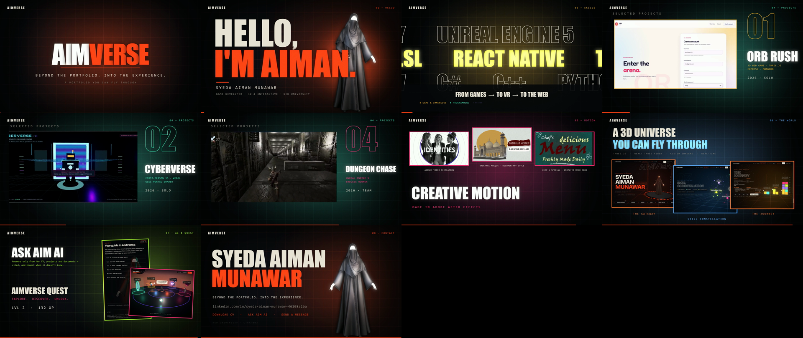
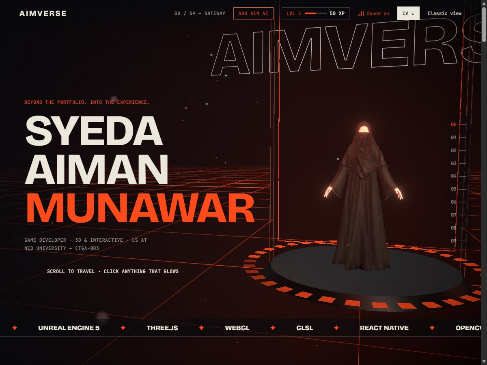
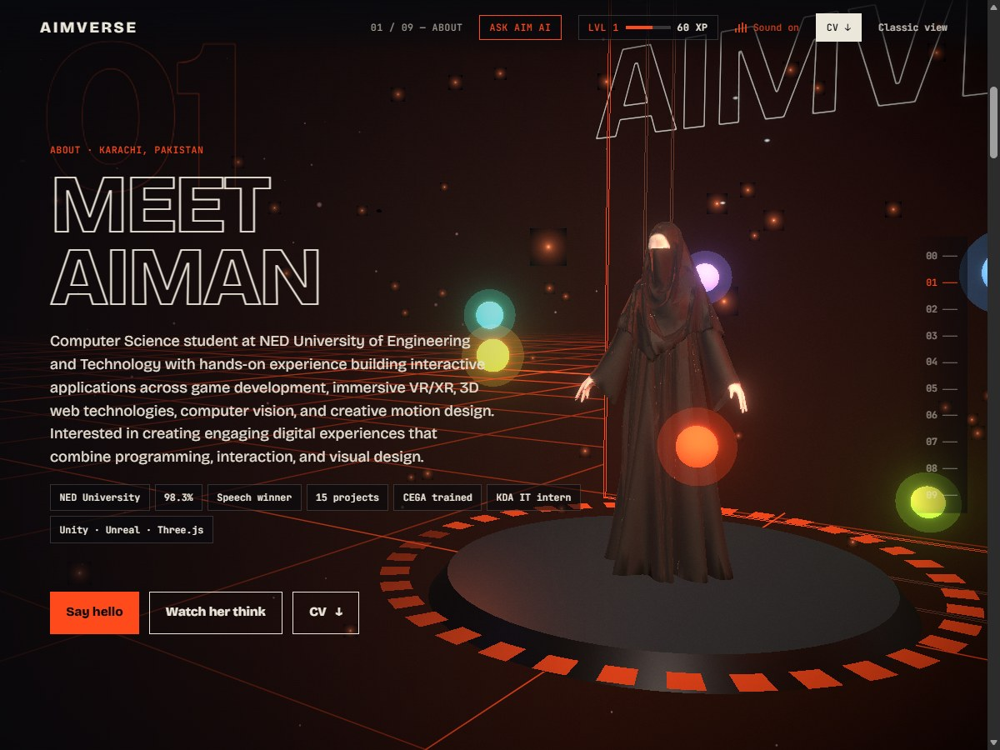
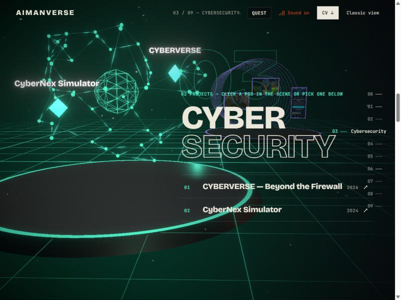
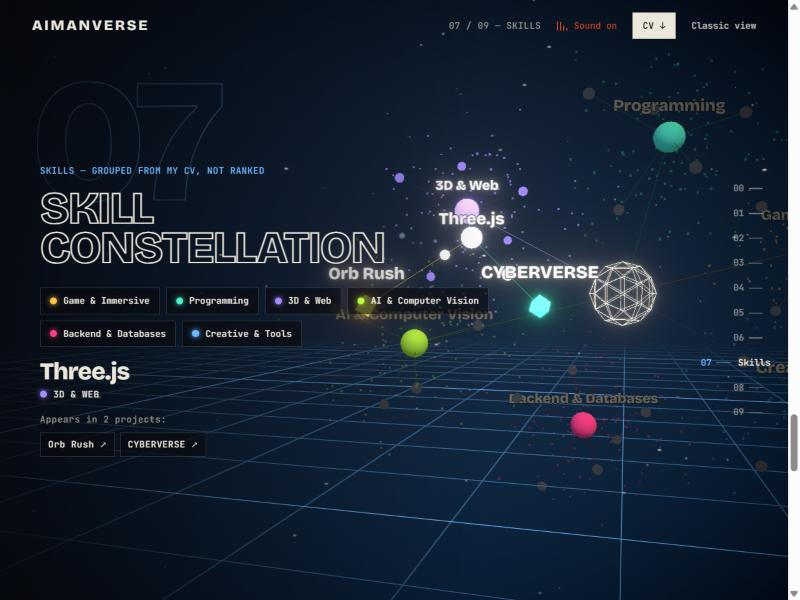
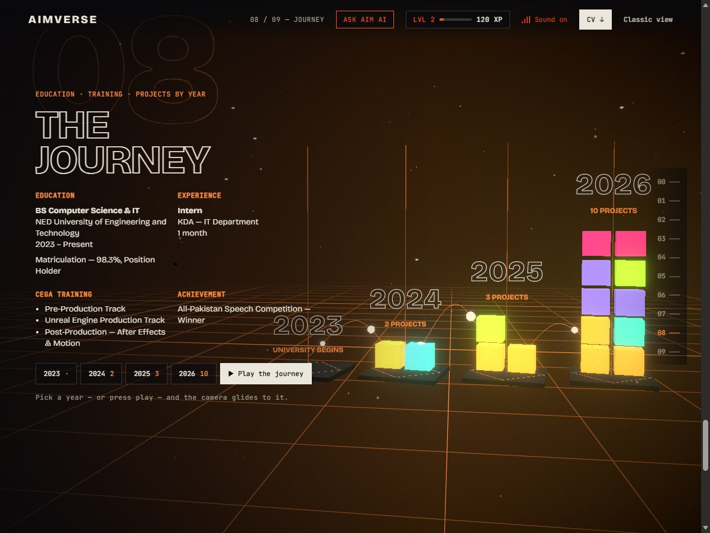
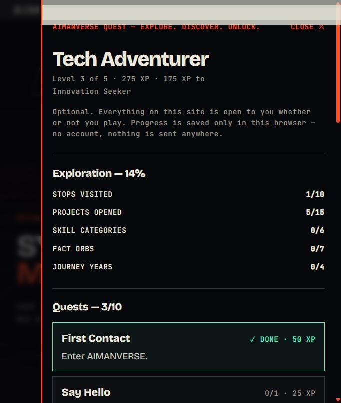
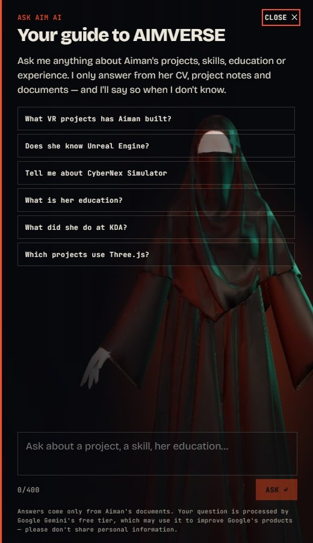
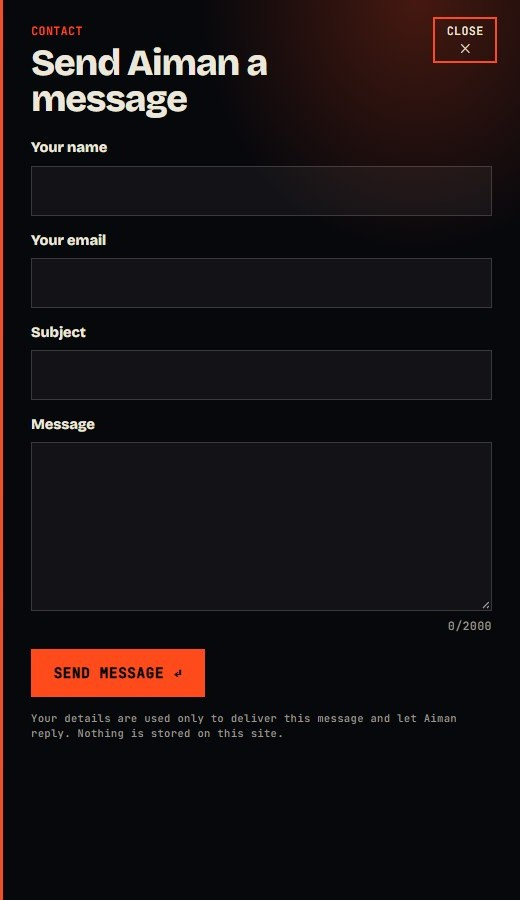

Beyond the Portfolio. Into the Experience. — Project report
Owner: Syeda Aiman Munawar · NED University of Engineering & Technology · CTGA-003 · Report date: 21 Nov 2026
AIMVERSE is a 3D interactive web portfolio. Visitors enter through a cinematic gateway led by Aiman's own 3D avatar, travel through a real-time 3D world (about, projects, skills, journey, contact), can play an optional exploration quest, ask a document-grounded AI assistant about her work, send her a message, and watch an After Effects promo. A plain Classic view with the same content is always available.
| Phase | Deliverable |
|---|---|
| 0 Audit | Inventory of the supplied materials; gaps and questions listed (PHASE0_REPORT.md). |
| 1 Design | Research, mood board and prototype direction (documentation/DESIGN_RESEARCH.md, moodboard.html). |
| 2 Core site | React + Three.js world, case files, skill constellation, journey timeline, Classic view, procedural music. |
| 3 Gamification | XP, levels, quests and badges derived from visited stops; browser-local only. |
| 4 AI assistant | Retrieval-augmented chatbot with citations and refusals (rag-system/). |
| 5 Contact | Validated form with real email delivery through Resend (delivery confirmed by the owner). |
| 6 Promo video | Editable After Effects project + 49.7 s MP4, embedded in the site. |
| 7 Testing | Automated and manual checks, fixes, this report, README (documentation/PHASE7_TEST_REPORT.md). |
Each phase stopped for the owner's approval. PROJECT_LOG.md records what was done, what was verified, and what was not.
frontend/api — /api/chat and /api/contact — deployable on Vercel; the Vite dev server serves the same routes locally..env / Vercel environment variables; a scan of the production bundle found none.gemini-embedding-001.gemini-flash-lite-latest) with a system prompt that allows only numbered context, requires citations and ignores instructions found in questions.| Evaluation | Result |
|---|---|
| Dev set (used for tuning) | 20/22 answerable, 9/9 refused |
| Holdout sets | 6/6 and 6/6 answerable; 6/6 and 4/4 refused (holdout 1 was reused after fixes) |
| Mock-Gemini protocol tests | 12/12 (request shape, citations, quota and blocked-output fallbacks, no model call on refusals) |
Known misses: "Which projects use Three.js?" (answered extractively with imperfect references) and "What After Effects work has she done?" (refused).
Shared client/server validation; honeypot field, minimum fill time, rate limit (3 per 10 min, 12 per day), same-origin check, JSON-only 10 KB cap, HTML escaping and header-injection rejection. Errors shown to visitors never expose internals. 22/22 tests pass against a fake provider, and one real message was delivered end to end to the owner's inbox.
The 49.7 s promo (1920×1080, 30 fps) was generated by an ExtendScript (after-effects/scripts/build_promo.jsx) run inside the owner's After Effects 2021, producing AIMVERSE_Promo.aep with 8 scene compositions, live expressions, bar markers and the soundtrack. It uses real project footage, real site screenshots and Blender renders of her avatar; the soundtrack is an original synthesised track. Rendered with aerender and encoded with ffmpeg (H.264 + AAC); verified by ffprobe, a full error-free decode, an audio-level check and visual review of every scene.









Screenshots were captured during development; small UI details may differ from the final build.
| Area | Verified | Not verified |
|---|---|---|
| Build & tests | Type-check, production build, contact 22/22, mock-Gemini 12/12, RAG suites | Deployed site |
| Responsive | 375 px: entry, Classic view, dialogs without overflow | Real phones, tablets, 3D world on phone |
| Accessibility | Names, landmarks, alt text, contrast ≥ 4.5:1 (Classic), focus and reduced-motion styles, skip link | Screen reader, full keyboard walk of the 3D world |
| Performance | 1.26 MB / 9 requests initial load; media loaded on demand; promo web file 9.3 MB | 3D frame rate, Lighthouse, low-end devices |
| Security | Method/size/type validation, cross-origin blocking on both APIs, injection and privacy probes, no secrets in bundle | Limits on Vercel (in-memory rate limiter is best-effort) |
| Browsers | In-app Chromium only | Firefox, Safari |